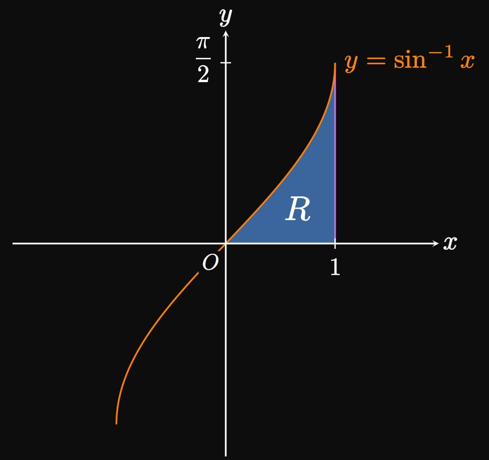

We've seen integrals that can be evaluated by a substitution.
For example, we evaluate \(\int \cos 2x \di x\) by substituting \(u = 2x.\)
In this section we build on this knowledge
by exploring how to reexpress integrals as simpler expressions.
Because we use the Product Rule to differentiate a product of functions,
let's reverse this process by learning to integrate a product of functions.
Let \(u\) and \(v\) be two differentiable functions of \(x.\)
By the Product Rule, the derivative of the product \(uv\) is
\[(uv)' = u' v + u v' \pd \]
Integrating both sides gives
\[
\ba
\int (uv)' \di x &= \int u' v \di x + \int u v' \di x \nl
uv &= \int u' v \di x + \int u v' \di x \nl
\int u v' \di x &= uv - \int u' v \di x \pd
\ea
\]
We condense the terms \(u' \di x\) and \(v' \di x\) as \(\dd u\) and \(\dd v,\) respectively.
Thus, we have
\begin{equation}
\int u \di v = uv - \int v \di u \label{eq:ibp} \pd
\end{equation}
In words, \(\eqref{eq:ibp}\) allows us to reexpress an integral \(\int u \di v\)
by choosing a term \(u\) to differentiate and an expression \(\dd v\) to integrate.
The resulting integral, \(\int v \di u,\) is hopefully easier to evaluate.
We call this procedure Integration by Parts.
TIP
Try to let \(u\) be a function whose derivative is simpler than \(u.\)
Hence, when we select \(u\) we often prioritize logarithmic functions or inverse trigonometric functions.
Of course, exceptions apply; no set of rules can replace trial and error.
INTEGRATION BY PARTS FORMULA
If \(u\) and \(v\) are differentiable functions of \(x,\) then
\begin{equation}
\int u \di v = uv - \int v \di u \eqlabel{eq:ibp} \pd
\end{equation}
EXAMPLE 1
\[\int x e^x \di x\]
Performing a substitution fails to evaluate the integral, so we instead attempt Integration by Parts.
The factor \(x\) is simpler when differentiated, so let's choose \(u = x\)
and \(\dd v = e^x \di x.\)
Differentiating and integrating these respective functions, we attain
\[\dd u = 1 \di x \and v = e^x \pd\]
Therefore, by \(\eqref{eq:ibp}\) we see
\[
\ba
\int xe^x \di x &= x \par{e^x} - \int e^x (1) \di x \nl
&= xe^x - \int e^x \di x \nl
&= \boxed{xe^x - e^x + C}
\ea
\]
REMARK
In Example 1
our choices of \(u\) and \(\dd v\) succeeded
because they yielded the simpler integral \(\int e^x \di x.\)
But flipping our choices—that is, selecting \(u = e^x\) and \(\dd v = x \di x\)
(from which \(\dd u = e^x \di x\) and \(v = \tfrac{1}{2} x^2\))—would instead give
\[\int x e^x \di x = \tfrac{1}{2} x^2 e^x - \int \tfrac{1}{2} x^2 e^x \di x \pd\]
While this equation is true,
it does not help us since
the integral \(\int \frac{1}{2} x^2 e^x \di x\) is more complicated to evaluate.
For this reason, it is insufficient to simply memorize \(\eqref{eq:ibp};\)
you must strategically choose \(u\) and \(\dd v.\)
Integration is a skill; the choices of \(u\) and \(\dd v\) are not always obvious.
Hence, keep practicing.
EXAMPLE 2
\[\int x^3 \ln x \di x\]
The integrand is a product of \(x^3\) and \(\ln x.\)
Let's choose \(u = \ln x\)
since it become simpler when differentiated.
Therefore, we perform Integration by Parts with
\[
\baat{2}
u &= \ln x \lspace &\dd v &= x^3 \di x \nl
\dd u &= \frac{1}{x} \di x \lspace &v &= \frac{x^4}{4} \pd
\eaat
\]
Using \(\eqref{eq:ibp},\) we have
\[
\ba
\int x^3 \ln x \di x &= \par{\ln x} \par{\frac{x^4}{4}} - \int \frac{x^4}{4} \par{\frac{1}{x}} \di x \nl
&= \frac{x^4}{4} \ln x - \int \frac{x^3}{4} \di x \nl
&= \boxed{\frac{x^4}{4} \ln x - \frac{x^4}{16} + C}
\ea
\]
EXAMPLE 3
\[\int \ln x \di x\]
The integrand appears to only be one factor.
But we can perform Integration by Parts with
\[
\baat{2}
u &= \ln x \lspace &\dd v &= \dd x \nl
\dd u &= \frac{1}{x} \di x \lspace &v &= x \pd
\eaat
\]
By \(\eqref{eq:ibp},\) we see
\[
\ba
\int \ln x \di x
&= \par{\ln x} (x) - \int x \par{\frac{1}{x}} \di x \nl
&= x \ln x- \int \dd x \nl
&= \boxed{x \ln x - x + C}
\ea
\]
EXAMPLE 4
A function \(f\) satisfies \(f(0) = 0\), \(f(4) = 3,\) and \(f'(4) = 2.\)
Calculate
\[\int_0^4 x f''(x) \di x \pd\]
Using Integration by Parts, we reexpress the integral by choosing
\[
\baat{2}
u &= x \lspace &\dd v &= f''(x) \di x \nl
\dd u &= \dd x \lspace &v &= f'(x) \pd
\eaat
\]
By \(\eqref{eq:ibp},\) we see
\[
\ba
\int_0^4 x f''(x) \di x &= x f'(x) \intEval_0^4 - \int_0^4 f'(x) \di x \nl
&= [4 f'(4) - 0] - \parbr{f(4) - f(0)} \nl
&= 4(2) - (3 - 0) = \boxed 5
\ea
\]
Because Integration by Parts enables us to reexpress an integral,
we are not performing a substitution.
The quantities \(u\) and \(\dd v\) are simply placeholders;
they do not initiate a variable change.
So in Example 4, we did not change
the bounds of the integral.
Just as we use a combination of differentiation rules,
Integration by Parts can be paired with other integration techniques—most notably,
the Substitution Rule, as shown by the following example.
EXAMPLE 5
Calculate the area of the region
bounded in the first quadrant by the curve \(y = \asin x.\)
The graph of \(y = \asin x\) is positive in the first quadrant,
so the area is given by the definite integral
\[\int_0^1 \asin x \di x \pd\]
Figure 1 shows this bounded region \(R.\)

Antidifferentiation
To find \(\int \asin x \di x,\) let's conduct Integration by Parts with
\[
\baat{2}
u &= \asin x \lspace &\dd v &= \dd x \nl
\dd u &= \frac{1}{\sqrt{1 - x^2}} \di x \lspace &v &= x \pd
\eaat
\]
So \(\eqref{eq:ibp}\) gives
\[\int \asin x \di x = x \asin x - \int \frac{x}{\sqrt{1 - x^2}} \di x \pd\]
We evaluate \(\int x/\sqrt{1 - x^2} \di x\) by substituting
\(w = 1 - x^2.\) Then \(\dd w = -2x \di x\) and so the integral becomes
\[-\int \frac{1}{2\sqrt w} \di w = -\tfrac{1}{2} \par{2 \sqrt w} + C = -\sqrt{1 - x^2} + C \pd\]
So we have
\[
\ba
\int \asin x \di x &= x \asin x - \par{-\sqrt{1 - x^2}} + C \nl
&= x \asin x + \sqrt{1 - x^2} + C \pd
\ea
\]
Area
By the Fundamental Theorem of Calculus,
the area is
\[
\ba
\int_0^1 \asin x \di x &= \par{x \asin x + \sqrt{1 - x^2}} \intEval_0^1 \nl
&= \par{\asin 1 + 0} - \par{\sqrt 1} \nl
&= \boxed{\frac{\pi}{2} - 1}
\ea
\]
EXAMPLE 6
\[\int x^2 \cos x \di x\]
Since \(x^2\) becomes simpler when differentiated,
we choose it to be \(u.\)
Performing Integration by Parts with
\[
\baat{2}
u &= x^2 \lspace &\dd v &= \cos x \di x \nl
\dd u &= 2x \di x \lspace &v &= \sin x \cma
\eaat
\]
we follow \(\eqref{eq:ibp}\) to get
\[
\int x^2 \cos x \di x = x^2 \sin x - \int 2x \sin x \di x \pd
\]
The resulting integral, \(\int 2x \sin x \di x,\)
is simpler than the starting integral.
To evaluate it, we perform Integration by Parts again with
\[
\baat{2}
u &= 2x \lspace &\dd v &= \sin x \di x \nl
\dd u &= 2 \di x \lspace &v &= -\cos x \pd
\eaat
\]
Accordingly, we see
\[
\ba
\int x^2 \cos x \di x &= x^2 \sin x - \par{-2x \cos x - \int 2 (-\cos x) \di x} \nl
&= x^2 \sin x + 2x \cos x - 2 \int \cos x \di x \nl
&= \boxed{x^2 \sin x + 2x \cos x - 2 \sin x + C}
\ea
\]
EXAMPLE 7
\[\int e^x \sin x \di x\]
Neither \(e^x\) nor \(\sin x\) becomes simpler
when differentiated.
Nevertheless, let's try Integration by Parts with
\[
\baat{2}
u &= e^x \lspace &\dd v &= \sin x \di x \nl
\dd u &= e^x \di x \lspace &v &= - \cos x \pd
\eaat
\]
Then \(\eqref{eq:ibp}\) gives
\[
\ba
\int e^x \sin x \di x
&= \par{e^x} \par{-\cos x} - \int \par{-\cos x} \par{e^x} \di x \nl
&= - e^x \cos x + \int e^x \cos x \di x \pd
\ea
\]
Now we employ a clever trick:
We reexpress \(\int e^x \cos x \di x\)
in terms of the left-hand integral, \(\int e^x \sin x \di x,\)
and then combine terms.
Doing so, we use Integration by Parts again with
\[
\baat{2}
u &= e^x \lspace &\dd v &= \cos x \di x \nl
\dd u &= e^x \di x \lspace &v &= \sin x \pd
\eaat
\]
So we see
\[
\ba
\int e^x \sin x \di x &=
- e^x \cos x + \par{e^x \sin x - \int (\sin x) e^x \di x} \nl
&= -e^x \cos x + e^x \sin x - \int e^x \sin x \di x \pd
\ea
\]
Adding \(\int e^x \sin x \di x\) to both sides and including the integration constant \(C,\) we get
\[
\ba
2\int e^x \sin x \di x &= -e^x \cos x + e^x \sin x + C \nl
\implies \int e^x \sin x \di x &= \tfrac{1}{2} \par{-e^x \cos x + e^x \sin x} + C \nl
&= \boxed{\tfrac{1}{2} e^x \sin x - \tfrac{1}{2} e^x \cos x + C}
\ea
\]
Integration by Parts permits us to reexpress the integral of a product
into an easier form.
We break an integral into two parts, one we differentiate and the other we integrate.
If \(u\) and \(v\) are differentiable functions of \(x,\) then
\begin{equation}
\int u \di v = uv - \int v \di u \eqlabel{eq:ibp} \pd
\end{equation}
It is
not
enough to simply memorize the formula.
Integration is a skill that you must practice—you
must know what expressions to assign \(u\) and \(\dd v.\)
In general, choose \(u\) to be the function whose derivative is simpler.